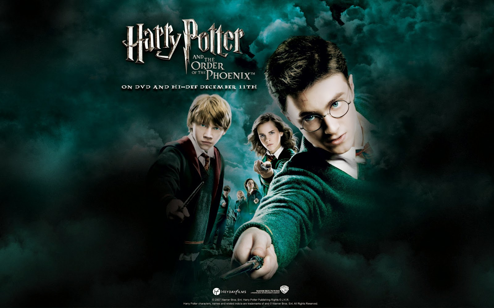

Harry Potter and The Order of The Pheonix
(Harry Potter and the Order of the Phoenix begins with Harry attacked by Dementors while staying with the Dursleys, forcing him to use magic and face a disciplinary hearing at the Ministry of Magic. He is cleared and taken to Grimmauld Place, the headquarters of the secret Order of the Phoenix, which works against Voldemort. At Hogwarts, the Ministry interferes by appointing Dolores Umbridge as Defense Against the Dark Arts teacher, who refuses to teach practical magic and imposes strict rules. In response, Harry and his friends form Dumbledore’s Army to secretly practice defensive spells. Harry struggles with visions connected to Voldemort, eventually leading him and his friends to the Department of Mysteries. There, they battle Death Eaters, and Sirius Black is tragically killed. The book closes with the wizarding world finally acknowledging Voldemort’s return, setting the stage for the war to come.)
